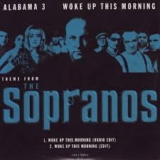
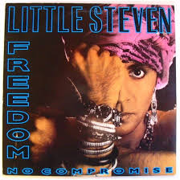
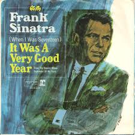
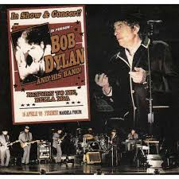
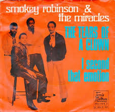
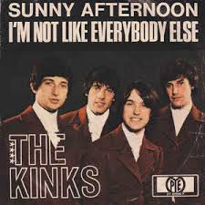
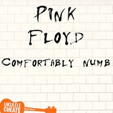

Música de Los Soprano
Banda sonora
La música en la serie del canal de televisión por cable HBO Los Soprano juega un papel importante en la trama y ha recibido críticas favorables por su efectividad en el uso de canciones de diversos estilos. David Chase, el creador de la serie, seleccionó personalmente toda la música junto al productor Martin Bruestle y el editor Kathryn Dayak, consultando en ocasiones a Steven Van Zandt, quien además de interpretar a Silvio Dante en la serie es el guitarrista de la E Street Band de Bruce Springsteen. La música era seleccionada frecuentemente una vez que la producción y edición del episodio estaban completas pero puntualmente las secuencias se filmaron para encajar con ciertas canciones preseleccionadas.
Woke Up This Morning – Alabama 3 (Tema de apertura)
Sería imposible que esta canción no apareciese en cualquier artículo que repasara la música presente en Los Soprano. Inmediatamente reconocible como un icono de la televisión de los últimos veinte años, a la altura de clásicos como la melodía de Los Simpsons o la sintonía de Seinfeld, no resulta difícil imaginar que mafiosos contemporáneos se cachondeen utilizándola como broma privada como tantas veces hemos visto en Los Soprano cuando sus personajes usan ad nauseam diálogos y términos de la trilogía de El Padrino para sus propias situaciones. Un tema brillante con unas letras que parecen haber sido escritas para el mismísimo Tony Soprano aun cuando originalmente fueron compuestas inspirándose en una mujer que mató a su propio marido tras años de maltrato.
Freedom – Little Steven. Primera Temporada.
Dentro del excelente elenco actoral de la serie, una de las incorporaciones más destacadas es la del guitarrista de Bruce Springsteen, y dueño de una respetable carrera en solitario, Steve Van Zandt (Little Steven en el mundo de la música) que interpreta a Silvio, uno de los hombres de confianza de Tony Soprano. Esta canción se oye en el local de striptease Bada Bing, propiedad de la familia – mafiosa se entiende- donde Tony y sus muchachos planifican sus negocios, y las más de las veces, intentan ligarse a alguna de las bailarinas o pontifican sobre lo divino y lo humano. Un retrato bastante desmitificador del decadente encanto que desprendían los Corleone.
It Was a Very Good Year – Frank Sinatra. Segunda Temporada.
David Chase creó escuela cuando abrió la segunda temporada de la serie utilizando una larga secuencia sin diálogo donde solo oímos esta canción de Frank Sinatra. A lo largo de buena parte de la canción vemos desfilar a los principales protagonistas de la serie actualizando su vida desde donde se dejó al finalizar la primera temporada. En muchos casos el tema elegido resulta claramente irónico al contemplar las intimidades del personaje aún cuando el propio Chase defiende que también hay algo de auto homenaje debido a la espléndida recepción que tuvo la serie ya desde sus primeros momentos. Esta secuencia inicial se repetirá en el primer episodio de todas las temporadas venideras.
Return to Me – Bob Dylan.Tercera Temporada.
Los Soprano contaron con una extensa legión de fans, algunos tan ilustres como el mismísimo Bob Dylan, que incluso llegó a solicitar poder grabar un tema para ser incluido en un episodio. Un melómano tan refinado como David Chase no podía negarle ese gusto al bardo de Minnesotta así que aceptó introducir esta versión de un tema original de Dean Martin. En la escena que se utilizó un personaje intenta consolar amablemente la madre de un joven desparecido. El tipo asegura que probablemente se habrá ido a tomarse unas vacaciones a Florida cuando la realidad es que él mismo colaboró en su asesinato. La crueldad no debe estar reñida con la educación.
Smokey Robinson – Tears of a Clown. Cuarta Temporada.
Cualquiera que busque acción, disparos y persecuciones en Los Soprano se sentirá decepcionado. Evidentemente sí hay raciones de violencia física pero el tema más importante es bucear en la violencia mental que llena la angustiada cabeza de Tony Soprano. Este tema versionado por Smokey Robinson, del que solo oímos sus primeros compases, es el que da el tono ideal tragicómico para rebuscar las conexiones psicológicas con algunos de los personajes que aparecen en la escena. Una onírica secuencia seguida de un no menos irreal análisis la psiquiatra del capo mafioso.
The Kinks – I´m Not Everybody Else. Quinta Temporada.
Todo capítulo de Los Soprano acababa invariablemente con una canción que de alguna manera conectaba con algo que habíamos visto durante el episodio. Uno de los más celebrados fue este enérgico tema de la banda de Ray Davis que empieza justo al acabar una escena familiar donde Tony Soprano no puede aceptar que su propia hermana, fácilmente proclive como él a los arranques de furia al menor contratiempo, tras haber tomado cursos de control de la rabia hace gala de una exquisita serenidad ante a los problemas que van surgiendo durante la cena. Tony decide buscarle las cosquillas y al final consigue que el genio tradicional de su hermana salga a la superficie. Es expulsado violentamente de la cena pero mientras se va no puede ocultar su satisfacción. Cuanto más general sea un problema, menos culpable se sentirá.
Pink Floyd – Confortably Numb. Sexta Temporada.
Tony Soprano es la antítesis de un gafapasta pero parece que durante parte los ochenta sí que estuvo interesado por la música. Casi todas las canciones que silba, tararea o canta son de esa época. Incluso la melodía de su móvil es We Are The Champions de The Queen. En este caso hace gala de cierto gusto musical al tararear un tema de Pink Floyd de su álbum “The Wall”, evidentemente los versos que canta luego tendrán su correspondencia en la trama. Si bien muchas canciones que salen en la serie solo ambientan la escena, otras muchas son parte esencial del mensaje del capítulo y pueden ayudar a entender importantes detalles que no son expuestos claramente.